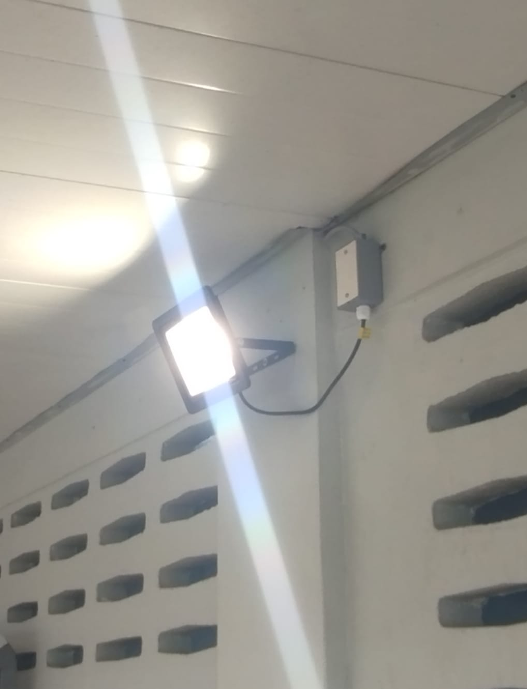
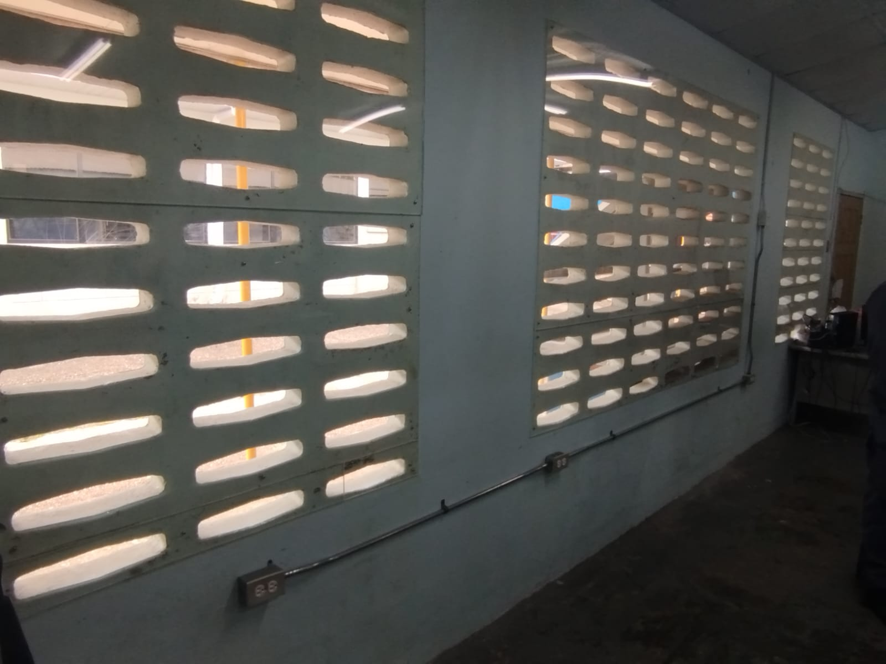

An cult member for ya
This section of the portfolio highlights the knowledge and practical skills I developed during the course Installation of Electrical Equipment in Wet Locations. Its purpose is to demonstrate my understanding of the correct procedures and safety practices required when working in damp or wet environments. It includes photos and written explanations of the installation process, showing my ability to select suitable materials, apply proper protection methods, and follow electrical standards. Overall, this section reflects my competence in carrying out safe and effective installations in wet locations.

Fig 1.1:Lighting ciruct connect to SPST switch inside

Fig 1.2:Finished practical project of the wp boxes and EMT cans.
| Item.No | Decsription | Quality | Quantity |
|---|---|---|---|
| l | WP boxes | Good | 3 |
| 2 | EMT Cans | Good | 3 |
| 7 | Electrical metallic tubing(EMT) | Excellent | 2 |
| 1 | Flat head screwdriver | Good | 1 |
| 2 | Wire Stripper | Good | 1 |
| 1 | 2.5mm² wire | Good | 25 yards |
| 4 | 1.5mm² wire | Good | 17 yards |
| 3 | Wall Drill | Good | 1 |
For electrical equipment in wet locations, components such as IP-rated enclosures, waterproof fittings, circuit breakers, and proper earthing systems were selected to ensure safe and reliable operation. Each component helps prevent water ingress, reduce shock risk, and protect against electrical faults. The design follows IEC and NEC-based standards for wet-area safety requirements. Sealed cable entries, corrosion-resistant materials, and elevated installation improve durability, maintenance, and suitability for damp environments.
Improved design features
For the installation of electrical equipment in wet locations, safe wiring practices include using moisture-resistant cables, secure conduit systems, and proper grounding of all equipment. PPE such as insulated gloves, safety boots, and safety glasses should be worn during installation. Lockout/Tagout procedures must be followed by isolating the power supply before any work is carried out. Protection against shock, short circuits, and overloads is ensured through circuit breakers, fuses, and proper earthing. IP-rated enclosures and sealed cable entry points should be used to prevent water ingress and improve reliability. These practices follow standards from the International Electrotechnical Commission and guidelines similar to the National Electrical Code.
This course provided me with further knowladge on the standard wiring codes, how to apply them, use of new tools snd greater insight to domestic work which will contribute to my future job.